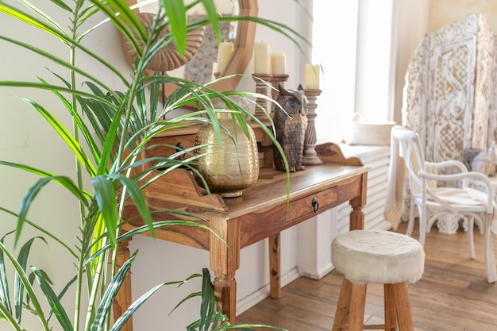

A successful interior in an English period home does not need to choose between preserving the past and living comfortably today. The most convincing rooms respect the character of the building while allowing contemporary needs to shape how the space works.

Before choosing colours or furniture, take stock of the property’s original features. These might include sash windows, panelled doors, ceiling roses, cornices, fireplaces, floorboards or decorative tiles. Their condition and position can help guide the design.
Preservation does not mean every feature must be restored to a pristine finish. Some details may be worn, altered or covered over. Where possible, establish what is original and what has been added later, then decide which elements are worth repairing, revealing or retaining. A fireplace, for example, can remain a focal point even if the room around it is furnished in a clean, contemporary way.
Heritage and modern design work well together when each has room to be noticed. A simple contemporary sofa can bring clarity to a room with ornate plasterwork; a traditional dining table can add warmth to a pared-back kitchen. The aim is not to make every object match the building’s age, but to create a considered relationship between old and new.
Proportion matters. In a room with high ceilings and substantial mouldings, very small-scale furniture may feel out of place. Equally, oversized contemporary pieces can obscure important details. Measure carefully and consider how furniture sits in relation to windows, fireplaces and circulation routes.
Colour can link historic features with modern finishes. A neutral wall colour may allow decorative joinery to stand out, while a deeper tone can make a fireplace or alcove feel intentional. Natural materials such as timber, stone, linen and wool can also provide continuity between different periods of design.
Rather than applying one palette to the whole house, consider how rooms relate to one another. Repeating a small number of colours, finishes or materials can create a sense of flow without making every space look identical. Test paint and material samples in the actual room, where natural and artificial light can change how they appear.
Modern living often calls for better storage, improved lighting and more adaptable layouts. These changes need not compete with a home’s character. Built-in storage can be designed to sit quietly against a wall, while contemporary lighting can provide practical illumination without trying to imitate historic fittings.
In kitchens and bathrooms, modern appliances and surfaces can be balanced with details that suit the building’s proportions and materials. In older properties, it is also worth considering how new services, ventilation and insulation will be integrated. Seek appropriate professional advice before making changes that affect the fabric of the building.
A heritage-inspired room can feel less authentic when every detail appears newly made to look old. It is often more effective to retain genuine features and pair them with a few contemporary choices. This lets the building’s character remain visible while giving the interior a clear identity of its own.
The same principle applies when restoring a feature: use an approach that suits the property rather than assuming that every surface should be returned to an imagined original state. Evidence, condition and practical use should all inform the decision.
Some English homes are listed, and work that affects a listed building’s character may require listed building consent. Rules can also vary by property and by the nature of the proposed work. Before removing, replacing or significantly altering historic features, check with the relevant local planning authority and consult suitably qualified professionals.
Blending heritage details with modern design is ultimately an exercise in balance. By understanding the building, choosing contemporary elements with care and planning practical updates sensitively, homeowners can create interiors that feel rooted in their setting and comfortable for everyday life. Oakline Studio can be part of that conversation, with the property’s own character as the starting point.
Please review the privacy information before submitting your details. This notice is a general prompt and does not describe specific data practices or replace a complete privacy policy. Read the Privacy Policy